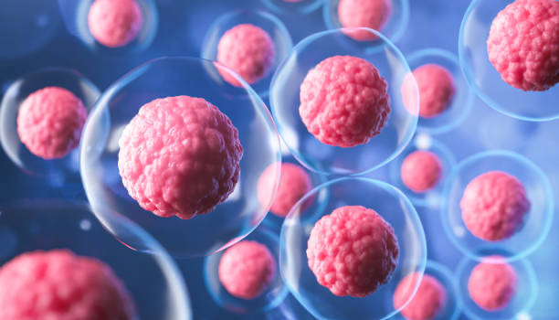

What are cellular therapies?
Cellular therapies are both and old and new. They represent an exciting type of treatment for cancer using cells instead of chemotherapy and radiation. Together with our collaborators, we aim to improve cellular therapies for our patients in the following areas:
- Hematopoietic cell transplantation (HCT) - commonly refered to as a "bone marrow transplant", is the process of replacing a patient's blood forming system. The use of HCT for the treatment of cancer was pioneered by E. Donnell Thomas at the Fred Hutch more than 50 years ago. Graft-versus-host disease (GVHD) is a devastating side effect of HCT in which the donor immune cells attack the tissues of the recipient. Together with collaborators in the Hill lab, we are currently working to:
- Identify novel mechanisms of antigen presentation in the gut that contribute to GVHD
- Define biomarkers in peripheral blood that may predict the development of chronic GVHD
- DIscover novel T cell subsets that contribute to GVHD
-
During HCT, donor immune cells will attack and kill recipient tumor (or leukemia) cells in ways that are not completely understood. However, donor T cells with specificity for tumor can eventually lose their tumor killing properties or fail to expand their numbers sufficiently. With our collaborators in the Bleakley and Hill labs, we are working to understand these failures more deeply.
Adoptive T cell therapy is an exciting new direction in the treatment of malignancy. T cells can be harvested from a patient and genetically engineered with specificity for tumor. Although adoptive cellular therapies such as chimeric antigen receptors (CARs) and transgeneic T cell receptors (TCRs) have shown promise clinically, there remain a number of barriers to greater success. Together with our collaborators in the Riddell lab we are using genomic technologies, some of which were developed by the Henikoff lab, to dissect the gene regulatory landscape of genetically modified and expanded T cell products. We believe with a deeper understanding of the transcriptional events that take place early in T cell activation and expansion, we will be able to embue the next generation of adoptive T cell therapies with better memory, potency, and longevity.
 Furlan Lab
Furlan Lab
We are always looking for curious scientists who share our vision of a better world through science
Get In Touch
1241 Eastlake Ave E, Seattle, WA
furlan_lab@fredhutch.org
© Scott Furlan, All Right Reserved.
Designed By HTML Codex Distributed By ThemeWagon